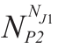
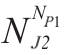
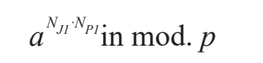
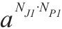

安全地交换密钥，这种说法听起来就自相矛盾：你如何把密钥作为一份已经加密的信息发送，而密钥先前就已经按常规方法交换过了？不过，如果交换方式为复式通信交换，那么大家就可以想象出解决问题的方法了——至少在理论层面是行得通的。
算法背后的人
1944年，贝利·惠特菲尔德·迪菲(Bailey Whitfield Diffie)生于美国。于麻省理工学院取得数学学位后，他2002年至2009年间在总部位于加利福尼亚的太阳微系统公司工作，担任首席安全官和副总裁。马丁·赫尔曼（Martin Hellmann）是工程师，出生于1945年，曾在IBM和麻省理工学院工作，在麻省理工学院期间，他与迪菲开始合作。
现在我们假设发送者叫詹姆斯（James），他用密钥加密了一条信息，并发送给接收者彼得（Peter）。彼得用自己的密钥把加密信息再次加密后，发回给詹姆斯。詹姆斯用他的密钥译解信息后发送了这份新信息，此时只有彼得的密钥能够译解。如此一来，多年来安全交换密钥的问题突然一下就解决了。这真的行得通吗？可惜不行。对于任何复杂的加密算法来说，密钥应用的顺序都很严格，我们已经发现，在上述理论的例子中，詹姆斯必须译解一条已经用另外一个密钥加密过的信息，如果他不先用彼得的密钥再用自己的密钥译解，那结果自然是乱码。上述情形虽然不能解决密钥安全的问题，但却是解决这个问题的一盏明灯。1976年，两个年轻的美国科学家贝利·惠特菲尔德·迪菲和马丁·赫尔曼发现一个方法，让两个人在不必交换任何密钥的前提下交换加密信息。这种方法运用了模运算和质数的性质。方法如下：
1.詹姆斯选取一个保密数字，我们把它设为NJ1。
2.彼得随机选取另一个保密数字，我们把它设为NP1。
3.然后，詹姆斯和彼得各自把数字套入函数公式f(x)=axmod.p，p为质数，且二人都知道是什么。
·通过方程运算，詹姆斯得出一个新数字NJ2，并将其发送给彼得。
·同样，彼得也得出一个新数字NP2，并将其发送给詹姆斯。
4.詹姆斯解出方程

(mod.p)，得出新数字CJ。5.彼得解出方程

(mod.p)，得出新数字CP。虽然看似不可能，但CJ和CP是相同的，由此我们求出了密钥。注意，詹姆斯和彼得交换信息的前提是两人商定好使用函数方程f(x)=axmod.p，并给对方发送NJ2和NP2。这样一来，无论是密钥还是信息被截取，都不会对加密系统的安全构成威胁。这种系统的密钥通常是这种形式：

同样重要的还有一点，就是要考虑原函数具有不可逆的特点，也就是说，即便知道函数以及运用到变量x上的结果，也不可能（至少很难）获取原变量x。
下面，为了强调重点，我们用具体的数值再讲一下这个过程。应用的函数是：
f(x)≡7x(mod.11)
1.詹姆斯选取一个数字NJ1，以3为例，计算f(x)≡7x(mod.11)，得出f(3)=73≡2 (mod.11)。
2.彼得选取一个数字NP1，以6为例，计算f(x)≡7x(mod.11)，得出f(6)=76≡4(mod.11)。
3.詹姆斯将结果2发给彼得，同样，彼得把结果4发给詹姆斯。
4.詹姆斯计算43≡9(mod.11)。
5.彼得计算26≡9(mod.11)。
因此，9就是密钥。
詹姆斯和彼得已经交换的是函数f(x)和数字2、4。对于窃听者来说，这条信息有用吗？假设未授权的接收者知道方程和数字。他的问题是要解决关于模11的NJ1和NP1，NJ1和NP1是詹姆斯和彼得的保密数字——甚至两人也互相保密。如果间谍试图发现它们，他只有求解

关于模p的密钥。顺便说一句，解决这个问题在数学上叫作“离散对数”。举个例子：f(x)≡3x(mod.17)
可以发现3x≡15(mod.17)，再试试x的其他值，求得x=6。
直至20世纪90年代初，这种算法和离散对数的问题才备受重视，而且直到近些年，才得以发展完善。在上述例子中，我们说6是15以3为底、对模17的离散对数。
前面已经提过，这种方程的特别之处，就是很难进行逆向计算——它们是非对称的。因此，对于大于300的p和大于100的a，破解密钥难度相当大。
病毒和“后门”
即便是最安全的公钥加密也依赖于保密的私钥。因此，如果病毒侵入并常驻在计算机内，还传输私钥，就能大规模地破坏加密系统。1998年，人们发现瑞士一家生产和销售加密产品的龙头公司在产品中嵌入了“后门”，能够检测用户的私钥并将数据发回公司。这些信息有一部分被移交给了美国政府，从而使其能够监控遭病毒感染的计算机之间的通信。
这种算法是现代加密术的基础。美国全国计算机会议期间，迪菲和赫尔曼在一次研讨会上提交了一篇名为“密码学的新方向”的论文，将他们的想法呈现给世人，开创了一个密码学的新时代。
迪菲-赫尔曼算法证明了创建一个不需要交换密钥的加密方法的可能性，但矛盾的是，该过程的一部分却要依靠公开通信——借此来传播确定密钥的初始数字对。
换句话说，它使得安全加密系统的收发双方无须会面，也无须私底下达成密钥。不过，还是存在某些问题：如果詹姆斯想给彼得发送信息，而此时彼得正在睡觉，或在干别的，那詹姆斯就必须得等彼得醒后计算出密钥，才能完成传输。
在尝试发现更有效的新算法的过程中，迪菲建立了一套理论，其中加密密钥不同于译解密钥，这样，两个密钥决不可能根据对方推导出来。在这个理论体系中，发送者有两个密钥：加密密钥和译解密钥。两个密钥中，发送者只能公开第一个，这样无论谁想给他发送信息，都能根据密钥加密。收到信息后，发送者使用译解密钥译解信息，而此时，很明显，译解密钥依然是保密的。这样的加密系统实用吗？
1977年8月，美国著名科学作家马丁·加德纳（MartinGardner）在《科学美国人》杂志的趣味数学专栏中发表了一篇文章，题目是“一种需数百万年才能破解的新型密码”。文中，他首先解释了公钥系统的原理，然后列出了加密信息以及用来创建该密码的公钥N：
N= 114.381.625.757.888.867.669.235.779.976.146. 612.010.218.296.721.242.362.562.561.842.935.706.935.245.733. 897.830.597.123.563.958.705.058.989.075.147.599.290.026.879.543.541
加德纳向他的读者发起挑战，甚至还提供了一条线索——要想破解，需要把N分解为它的主要组件p和q。当时，李维斯特、沙米尔和阿德尔曼预测，需要40万亿年的时间才能知道RSA-129。除此之外，加德纳还承诺，谁先解答出正确答案，就奖励他100美元（在当时算是一笔巨款了）。加德纳提出，如果有人想了解密码的更多信息，可以写信咨询密码的创始人、麻省理工实验室的罗恩·李维斯特、阿迪·沙米尔和伦恩·阿德尔曼。
一晃17年过去了，加德纳才收到正确答案，而且是600多人合作才求出来的。求出的密钥是p=32.769.132.993.266.709.549.961.988.190.834.461.413.177.642.967.992. 942.539.798.288.533和q=3.490.529.510.847.650.949.147.849.619.903.898.133.417.764.638.493.387.843.990.820.577，加密的信息是“Themagic words are squeamish ossifrage”（咒语是易受惊的鱼鹰）。
人们把加德纳提出的算法称为RSA算法，RSA是李维斯特、沙米尔和阿德尔曼三人姓氏的首字母。这是迪菲假定提出的公钥模型的第一例实际应用，今天人们仍经常使用。RSA几乎可以说是完全安全的，原因就在于解译过程虽说不无可能，但也绝对是难于登天一般。下面，我们简单了解一下这个系统的基础。
RSA算法基于质数的某种特性，有兴趣的读者可以参考附录。此处限于篇幅，我们只介绍它背后的基本假设：
·小于n并与n互为质数的数的数目叫作欧拉函数，用φ(n)表示。
·假设p和q是质数，且n=pq，则φ(n)=(p-1)(q-1)。
·根据费马小定理，如果p是质数，a是pn［即如果gcd(a,p)=1］的整数倍数，则满足方程ap-1≡1(mod.p)。
·根据欧拉定理，如果gcd(n,a)=1，则aφ(n)≡1(mod.1)。
上面提到，任何人只要有兴趣传输信息，都可以拿到加密密钥，因此人们把这套系统称为“公钥”。每个接收者都有自己的公钥。信息通常译为数字，如ASCII密码或其他系统，然后发送。
首先，詹姆斯根据两个质数p和q的乘积得到n（n=p·q），我们给e选择一个数值，满足gcd(φ(n) , e)=1。记住φ(n)=(p-1)(q-1)。公开的数据是n和e的值（任何情况下都不公开p和q）。(n,e)就是该系统的公钥，而p和q被称为RSA数字。同样，詹姆斯计算出d对于模φ(n)的唯一值，满足d·e≡1(mod.φ(n))，就是e对于模φ(n)的倒数。我们知道，倒数之所以存在，是因为gcd(φ(n),e)=1。这个值是该系统的私钥。彼得用公钥（n,e）通过M≡me(mod.n)加密信息m。收到信息后，詹姆斯进行Md≡(me)d(mod.n)的运算，这个表达式等于Md=(me)d≡m(mod.n)，证明信息能被解译。
现在我们用具体的数值重复这个过程：
·如果p=3，q=11，则n=33。φ(33)=(3-1)·(11-1)=20。詹姆斯选择e的数值与20没有公约数，如e=7。詹姆斯的公钥是（33,7）。
·同时，詹姆斯已经计算出私钥d是7对模20的倒数，也就是7·3≡1 (mod.20)，因此d =3。
·彼得获取了公钥，想给我们发送信息“9”。他用詹姆斯的公钥给信息加密，即：
97=4 782 969≡15(mod.33)
·加密后的信息是15。在公共领域发出“15”这条信息。
·詹姆斯收到信息15，并开始译解它：
153=3 375≡9(mod.33)
最终信息被正确译解。
如果选择较大的质数p、q，应用RSA算法的难度系数就会暴增，此时就得求助计算机了。比如，如果p=23、q=17，则n=391。对e=3的公钥是（391,3）。结果是：d=235。如果明文信息是34，那么译解运算公式为：
204235≡34(mod.391)
请注意这个数量级，并想象找到这个解决方案所需的巨大计算能力。
间谍知道n和e的值，因为它们是公开的。但要译解信息，他还需要d的值，也就是私钥。在前面的例子中，我们展示了根据n和e计算得出d的过程。那么安全性从何而来呢？回忆一下，要想求得d，就必须知道φ(n)=(p-1)(q-1)，尤其p和q。为此，把n作为两个质数p和q的乘积分解就够了。间谍面临的问题是，两个质数的乘积很大，分解起来费时又费力。如果n足够大（大约有100多个数位），那么在一定时间内就没法求出p和q。今天，用来加密信息的质数，难度最大的已经超过了200个数位。